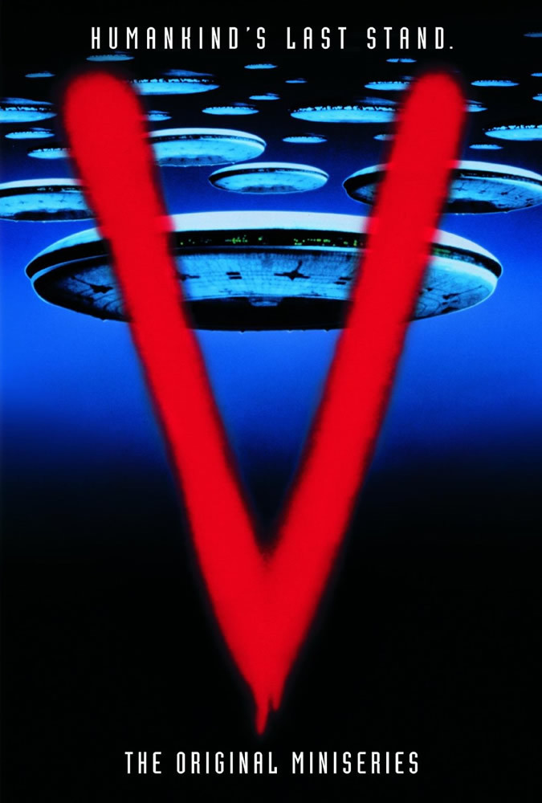
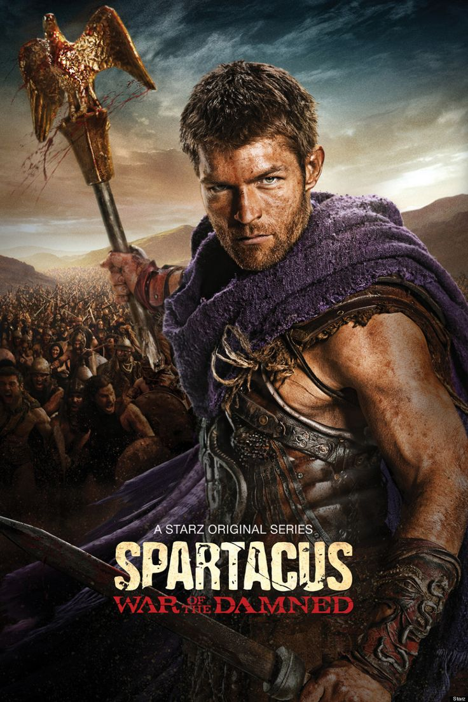
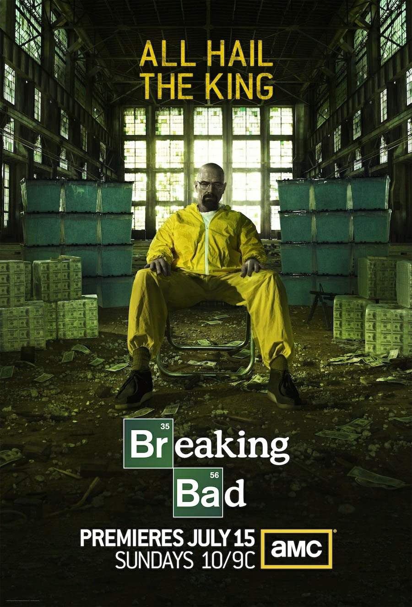

Josias Geoffroy
Student Programmer @ Le Wagon Tōkyō
Le Wagon Tokyo Batch #147
Le Wagon Tokyo Batch #147


 |
The MatrixThe Matrix is a 1999 science fiction action film written and directed by The Wachowskis, It depicts a dystopian future in which reality as perceived by most humans is actually a simulated reality called "the Matrix", created by sentient machines to subdue the human population |
 |
Star Wars30 years after the defeat of Darth Vader and the Empire, Rey, a scavenger from the planet Jakku, finds a BB-8 droid that knows the whereabouts of the long lost Luke Skywalker. Rey, as well as a rogue stormtrooper and two smugglers, are thrown into the middle of a battle between the Resistance and the daunting legions of the First Order. |
 |
TroyAn adaptation of Homer's great epic, the film follows the assault on Troy by the united Greek forces and chronicles the fates of the men involved. |
|  |
VWhen aliens come to Earth to ask for our help, a few suspicious humans discover their horrific true intentions and prepare to resist. |
|  |
SpartacusSpartacus is an American television series produced in New Zealand. The fiction series was inspired by the historical figure of Spartacus, a Thracian gladiator who from 73 to 71 BCE led a major slave uprising against the Roman Republic departing from Capua. |
|  |
Breaking BadBreaking Bad is an American neo-western crime drama television series created and produced by Vince Gilligan.It tells the story of Walter White (Bryan Cranston), a struggling high school chemistry teacher diagnosed with lung cancer. Together with his former student Jesse Pinkman (Aaron Paul), White turns to a life of crime by producing and selling crystallized methamphetamine to secure his family's financial future before he dies, while navigating the dangers of the criminal world. |